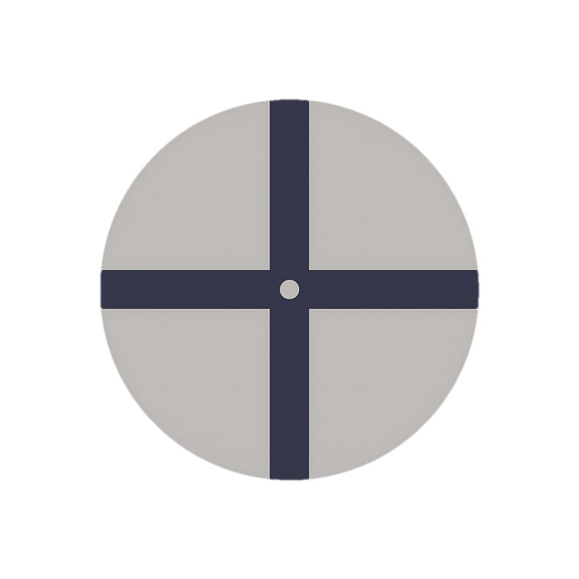

<!DOCTYPE html>
<html>
<head>
  <meta charset="utf-8">
  <script src="../dist/jspsych.js"></script>
  <script src="../dist/plugin-html-button-response.js"></script>
  <script src="../dist/plugin-html-keyboard-response.js"></script>
  <script src="../dist/plugin-webgazer-init-camera.js"></script>
  <script src="../dist/plugin-webgazer-calibrate.js"></script>
  <script src="../dist/plugin-virtual-chinrest.js"></script>
  <script src="js/webgazer/webgazer.js"></script>
  <script src="../dist/extension-webgazer.js"></script>
  <link rel="stylesheet" href="../dist/jspsych.css" />
  <style>
    .jspsych-content { max-width: 100%; }
  </style>
</head>
<body></body>
<script>
  // ===== PARAMETERS =====
  const calibrationPoints   = 5;
  const calibrationReps     = 2;
  const fixationRadiusDeg   = 2;
  const fixationDuration    = 10000; // ms
  const validationLoopCount = 2;

  // ===== GLOBALS =====
  let pixelsPerDegree = null;
  let viewingDistance = null;
  const accuracyResults = [];

  // ===== UTILITIES =====
  function getCalibrationPoints(n) {
    if (n === 5)  return [[25,25],[75,25],[50,50],[25,75],[75,75]];
    if (n === 9)  return [[20,20],[50,20],[80,20],[20,50],[50,50],[80,50],[20,80],[50,80],[80,80]];
    if (n === 13) return [[10,10],[30,10],[50,10],[70,10],[90,10],[20,50],[40,50],[60,50],[80,50],[10,90],[30,90],[50,90],[70,90]];
    return [[50,50]];
  }

  // ===== INITIALIZE =====
  const jsPsych = initJsPsych({
    extensions: [{ type: jsPsychExtensionWebgazer, params: { targets: [] } }]
  });
  const timeline = [];

  // 1. Intro & camera permission
  timeline.push({
    type: jsPsychHtmlButtonResponse,
    stimulus: `<p>This experiment uses your camera for eye tracking.</p>
               <p>You will be prompted to allow camera access next.</p>`,
    choices: ['Begin'],
    post_trial_gap: 500
  });

  // 2. Initialize camera for WebGazer
  timeline.push({ type: jsPsychWebgazerInitCamera });


  // 4. WebGazer calibration
  timeline.push({
    type: jsPsychHtmlButtonResponse,
    stimulus: `<p>Calibration: ${calibrationPoints} points × ${calibrationReps} reps</p>
               <p>Click to start calibration.</p>`,
    choices: ['Start calibration']
  });
  timeline.push({
    type: jsPsychWebgazerCalibrate,
    calibration_points: getCalibrationPoints(calibrationPoints),
    repetitions_per_point: calibrationReps,
    randomize_calibration_order: true
  });

  // 3. Virtual chinrest calibration
  //timeline.push({
  //  type: jsPsychVirtualChinrest,
  //  blindspot_repetitions: 3,
  //  resize_prompt: true,
  //  data: { trial_id: 'virtual-chinrest' },
  //  on_finish: data => {
  //    pixelsPerDegree = data.px2deg || 50;
  //    viewingDistance = data.distance || 'NA';
  //    console.log('pixelsPerDegree =', pixelsPerDegree);
   //   console.log('viewingDistance =', viewingDistance);
  //  }
  });

  // 5. Validation loop trials
  for (let i = 1; i <= validationLoopCount; i++) {
    timeline.push({
      type: jsPsychHtmlButtonResponse,
      stimulus: `<p>Validation trial ${i} of ${validationLoopCount}</p>
                 <p>Press to begin a 10-second fixation.</p>`,
      choices: ['Begin'],
      post_trial_gap: 100
    });
    timeline.push({
      type: jsPsychHtmlKeyboardResponse,
      stimulus: () => {
        const sizePx = 2 * pixelsPerDegree * fixationRadiusDeg;
        return `<div style="display:flex;justify-content:center;align-items:center;height:100vh;">
                  
                </div>`;
      },
      choices: 'NO_KEYS',
      trial_duration: fixationDuration,
      data: { trial_id: 'fixation-validation', trial_number: i },
      on_load: () => {
        webgazer.resume();
        const buffer = [];
        const t0 = performance.now();
        (function sample() {
          if (performance.now() - t0 < fixationDuration) {
            webgazer.getCurrentPrediction().then(g => {
              if (g?.x != null && g?.y != null) buffer.push(g);
            });
            jsPsych.pluginAPI.setTimeout(sample, 50);
          }
        })();
        jsPsych.pluginAPI.getCurrentTrialGazeBuffer = () => buffer;
      },
      on_finish: data => {
        webgazer.pause();
        const buffer = jsPsych.pluginAPI.getCurrentTrialGazeBuffer();
        const cx = window.innerWidth / 2;
        const cy = window.innerHeight / 2;
        const roiPx = pixelsPerDegree * fixationRadiusDeg;
        const distances = buffer.map(g => Math.hypot(g.x - cx, g.y - cy));
        const insideCount = distances.filter(d => d <= roiPx).length;
        const pctInside = buffer.length ? (insideCount / buffer.length) * 100 : 0;
        const avgOffset = distances.length ? distances.reduce((a, b) => a + b, 0) / distances.length : null;
        accuracyResults.push({
          trial: i,
          avgOffsetPx: avgOffset != null ? avgOffset.toFixed(2) : 'N/A',
          pctInROI: pctInside.toFixed(1)
        });
      }
    });
  }

  // 6. Summary screen with averages and table
  timeline.push({
    type: jsPsychHtmlButtonResponse,
    stimulus: () => {
      const roiPx = (pixelsPerDegree * fixationRadiusDeg).toFixed(1);
      const offsets = accuracyResults.map(r => parseFloat(r.avgOffsetPx)).filter(x => !isNaN(x));
      const avgOfAvg = offsets.length ? offsets.reduce((a, b) => a + b, 0) / offsets.length : 0;
      const pcts = accuracyResults.map(r => parseFloat(r.pctInROI)).filter(x => !isNaN(x));
      const avgPct = pcts.length ? pcts.reduce((a, b) => a + b, 0) / pcts.length : 0;
      let html = `<h3>Validation Summary (${validationLoopCount} trials)</h3>
        <ul>
          <li>Calibration points: ${calibrationPoints}</li>
          <li>Reps per point: ${calibrationReps}</li>
          <li>Pixels per degree: ${pixelsPerDegree.toFixed(2)}</li>
          <li>Fixation radius (°): ${fixationRadiusDeg}</li>
          <li>Fixation radius (px): ${roiPx}</li>
          <li>Avg of avg offsets (px): ${avgOfAvg.toFixed(2)}</li>
          <li>Avg % in ROI: ${avgPct.toFixed(1)}</li>
        </ul>
        <table border="1" style="margin:auto;">
          <tr>
            <th>Trial</th>
            <th>Avg Offset (px)</th>
            <th>% in ROI</th>
          </tr>`;
      accuracyResults.forEach(r => {
        html += `<tr>
                   <td>${r.trial}</td>
                   <td>${r.avgOffsetPx}</td>
                   <td>${r.pctInROI}</td>
                 </tr>`;
      });
      html += `</table><p>Click to finish.</p>`;
      return html;
    },
    choices: ['Finish']
  });

  jsPsych.run(timeline);
</script>
</html>
